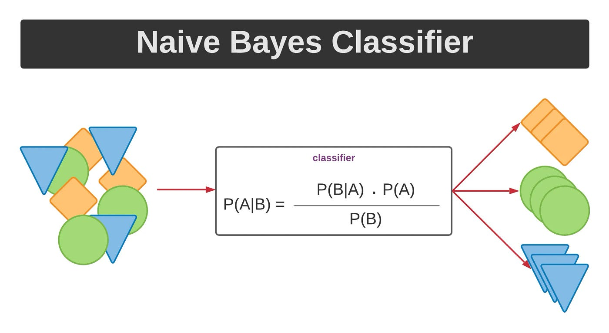
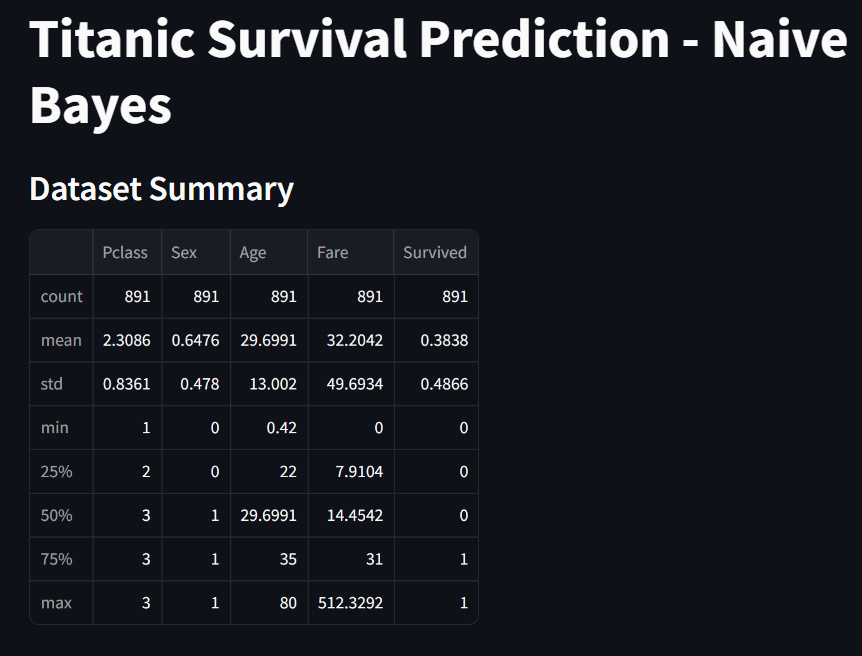
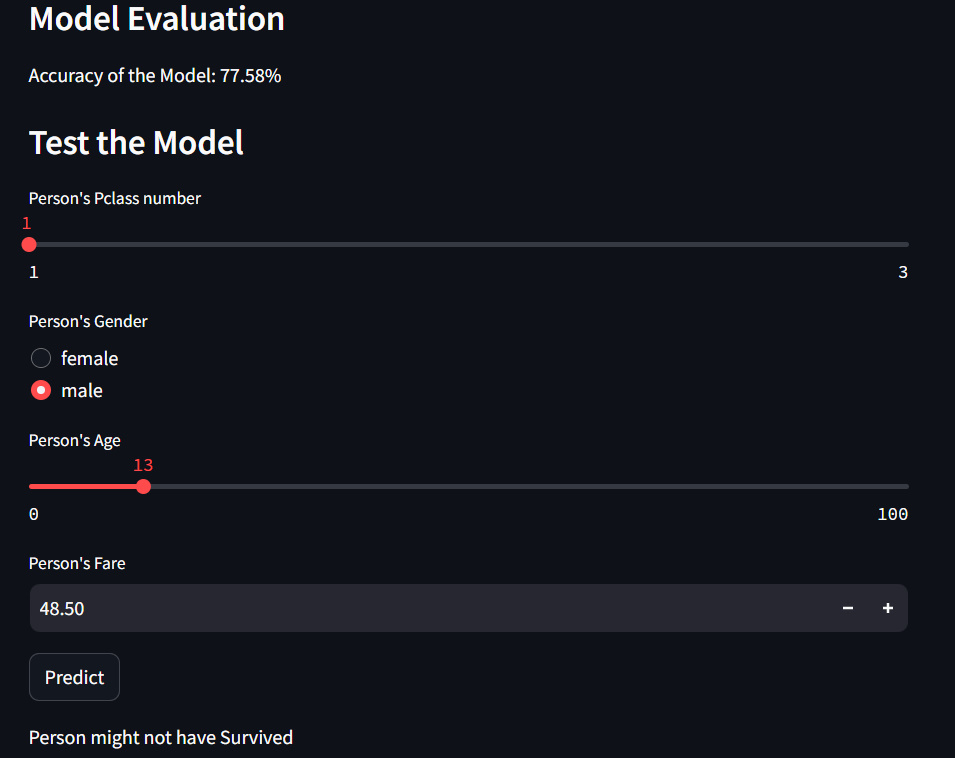

Titanic Survival Prediction - Naive Bayes¶
Project Overview¶
The Titanic Survival Prediction project aims to predict whether a passenger aboard the Titanic survived or not using the Naive Bayes algorithm. This project is based on the famous Titanic dataset, which contains information about passengers such as their age, gender, class, fare, and survival status. The goal is to build a predictive model that can accurately classify passengers into survived or not survived categories based on their attributes.
Naive Bayes Code¶
import streamlit as st
import pandas as pd
import numpy as np
from sklearn.model_selection import train_test_split
from sklearn.naive_bayes import GaussianNB
from sklearn.metrics import accuracy_score
# Load Dataset
def load_data():
dataset = pd.read_csv('C:/Users/USER/Documents/My GitHub Folder/Machine Learning Project/Machine-Learning-Projects/1. Supervised Learning/4. Naive Bayes/titanic survival.csv')
return dataset
# Preprocess Dataset
def preprocess_data(dataset):
dataset['Sex'] = dataset['Sex'].map({'female': 0, 'male': 1}).astype(int)
dataset['Age'] = dataset['Age'].fillna(dataset['Age'].mean())
return dataset
# Train Model
def train_model(X_train, y_train):
model = GaussianNB()
model.fit(X_train, y_train)
return model
# Predict Survival
def predict_survival(model, pclassNo, gender, age, fare):
person = [[pclassNo, gender, age, fare]]
result = model.predict(person)
return result
# Main function
def main():
st.title('Titanic Survival Prediction - Naive Bayes')
# Load dataset
dataset = load_data()
dataset = preprocess_data(dataset)
# Small summary of the dataset
st.subheader('Dataset Summary')
st.write(dataset.describe())
# Segregate dataset into X and Y
X = dataset.drop('Survived', axis='columns')
Y = dataset['Survived']
# Split dataset into train and test
X_train, X_test, y_train, y_test = train_test_split(X, Y, test_size=0.25, random_state=0)
# Train model
model = train_model(X_train, y_train)
# Model Evaluation
st.subheader('Model Evaluation')
y_pred = model.predict(X_test)
accuracy = accuracy_score(y_test, y_pred)
st.write(f'Accuracy of the Model: {accuracy * 100:.2f}%')
# Model Testing
st.subheader('Test the Model')
pclassNo = st.slider('Person\'s Pclass number', min_value=1, max_value=3, value=2)
gender = st.radio('Person\'s Gender', ['female', 'male'])
gender = 0 if gender == 'female' else 1
age = st.slider('Person\'s Age', min_value=0, max_value=100, value=30)
fare = st.number_input('Person\'s Fare', min_value=0.0, value=50.0, step=0.1)
if st.button('Predict'):
result = predict_survival(model, pclassNo, gender, age, fare)
if result == 1:
st.write("Person might have Survived")
else:
st.write("Person might not have Survived")
if __name__ == '__main__':
main()
Results¶
# Test the Model
